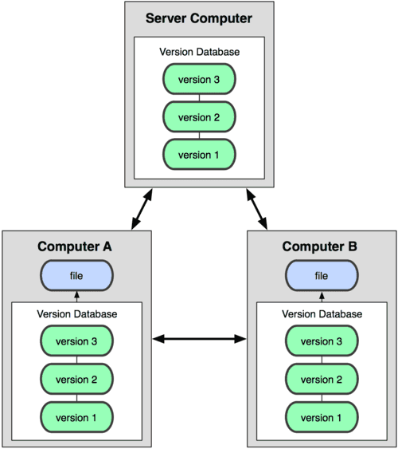
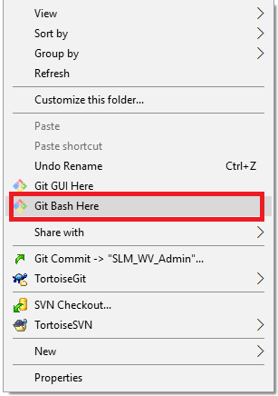
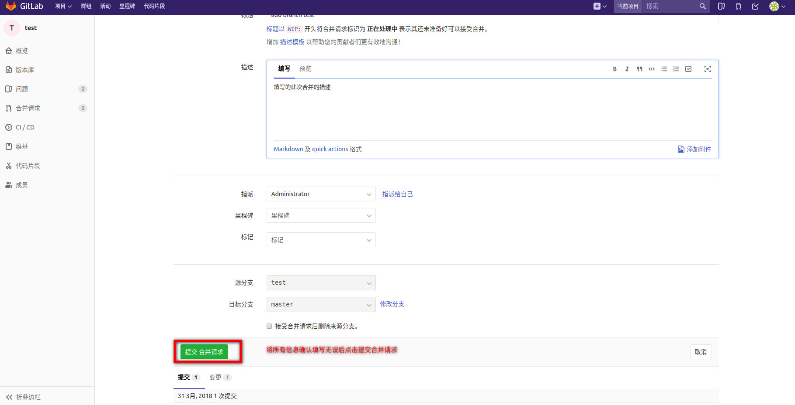

1.什么是git?什么是github?什么又是gitlab?
- git 与SVN类似是一种版本控制系统
- github 是一个基于git实现的在线代码仓库，包含一个网站界面，向互联网开放
- gitlab 是一个基于git实现的在线代码仓库软件，你可以用gitlab自己搭建一个类似于github一样的系统，一般用于在企业、学校等内部网络搭建git私服
2.为什么改用git？
SVN, CVS这类早期的集中式版本控制系统，都有一个单一的集中管理的服务器，保存所有文件的修订版本，而协同工作的人们都通过客户端连到这台服务器，取出最新的文件或者提交更新。
它们的原理类似下图：
而Git或Mercurial这类分布式版本控制系统,才是现代的首选。因为分布式的优势绝对显著。在分布式版本控制系统里，客户端并不只提取最新版本的文件快照，而是把代码仓库完整地镜像下来。这么一来，任何一处协同工作用的服务器发生故障，事后都可以用任何一个镜像出来的本地仓库恢复。因为每一次的提取操作，实际上都是一次对代码仓库的完整备份。
它们的原理类似下图：

至于Git与SVN的区别在此暂时不做过多讲解，可自行搜索；
3.git怎么用？
3.1 git安装
Debian/Ubuntu
apt-get install git
windows
廖雪峰的git教程（含图片和视频）：https://www.liaoxuefeng.com/wiki/0013739516305929606dd18361248578c67b8067c8c017b000
官方中文教程：https://git-scm.com/book/zh/v2
3.2 马上开始使用
注意
首先，我们需要配置忽略文件，忽略文件的原则是：
1.忽略操作系统自动生成的文件，比如缩略图等；
2.忽略编译生成的中间文件、可执行文件等，也就是如果一个文件是通过另一个文件自动生成的，那自动生成的文件就没必要放进版本库，比如Java编译产生的.class文件；进入你的项目的根目录，创建名为”.gitignore”的文件，不需要从头写.gitignore文件，这里 已经为我们准备了各种配置文件，只需要组合一下就可以使用了
在git安装好后对于windows平台，点击鼠标右键会看见如下的菜单：
打开上图中选中的Git Bash,这个操作会打开如下的控制台，接下来我们的操作将会在这个控制台中进行
首先我们需要配置Git 全局设置，在控制台中输入下面的命令
git config –global user.name “你的gitlab用户名”
git config –global user.email “你的gitlab注册邮箱”接下来进入到你的项目的根目录再次打开Git Bash 或者在刚才打开的Git Bash控制台中输入：
cd /你的项目的根目录
下面将会在你的项目下创建一个本地git仓库，并且与远程仓库关联，在刚才打开的控制台中分别输入如下命令：
git init
git remote add origin 你的项目所在的gitlab仓库地址
git add .
git commit -m “Initial commit”
git push -u origin master
你的项目所在的gitlab仓库地址可以在这找到：
- 接下来会要求你分别输入你的gitlab的用户名和密码，之后整个初始化的过程就结束了：
3.3 git使用工具
git使用工具主要有两种方式
- 命令行 也就是刚才我们初始化仓库时使用的Git Bash
使用GUI客户端
这有不少针对不同平台的GUI客户端，大家可以自行挑选使用，对于windows平台推荐tortoisegit
4.持续集成平台
4.1 什么是持续集成？
持续集成强调开发人员提交了新代码之后，立刻进行构建、（单元）测试。根据测试结果，我们可以确定新代码和原有代码能否正确地集成在一起。
4.2 目前已经搭建好的平台
- Gitlab CI:gitlab-ci作为gitlab提供的一个持续集成的套件，完美和gitlab进行集成，gitlab-ci已经集成进gitlab服务器中，在另一台服务器中已搭建好gitlab runner，它将会根据工程中配置的gitlab-ci.yml，执行相应的命令进行编译。

- Jekins:Jenkins作为老牌的持续集成框架，在这么多年的发展中，积累很多优秀的plugin工具，对进行持续集成工作带来很大的便利。
目前Jekins服务器已经搭建完成，大家可以自行访问，注册，配置
参考：使用 Jenkins 设置一个持续交付框架
Docker 及 GitLab CI 在前端工作流上的实践分享
- 总结:Gitlab CI 和 Jekins的功能大致相同，Gitlab CI配置较为简单,Jekins由于插件比较完善，更适合比较复杂的项目，大家可以自行选择使用。
5.Gitlab 工作流
5.1 上游优先原则
Gitlab flow 的最大原则叫做"上游优先"（upsteam first），即只存在一个主分支master，它是所有其他分支的"上游"。只有上游分支采纳的代码变化，才能应用到其他分支。
5.2 持续发布
Gitlab flow 分成两种情况，适应不同的开发流程。

对于”持续发布”的项目，它建议在master分支以外，再建立不同的环境分支。比如，”开发环境”的分支是master，”预发环境”的分支是pre-production，”生产环境”的分支是production。
开发分支是预发分支的”上游”，预发分支又是生产分支的”上游”。代码的变化，必须由”上游”向”下游”发展。比如，生产环境出现了bug，这时就要新建一个功能分支，先把它合并到master，确认没有问题，再cherry-pick到pre-production，这一步也没有问题，才进入production。
5.3 版本发布

对于”版本发布”的项目，建议的做法是每一个稳定版本，都要从master分支拉出一个分支，比如2-3-stable、2-4-stable等等。
以后，只有修补bug，才允许将代码合并到这些分支，并且此时要更新小版本号。
6. 分支使用
6.1 使用场景
角色：
开发人员：（可以创建分支，并将代码push到非保护性分支）
主程序员 ：（权限比开发人员更高，可以处理合并分支请求,同时可以将代码push到保护性分支）
任务：
开发人员：从主线分支拉取一个自己的分支（此处以test分支为例）进行开发，将代码提交到远程仓库后提交合并请求，将自己的分支与主线分支合并
主程序员：收到合并请求，审查代码无误后将代码合并到主线分支
6.2 具体步骤
1.checkout 到 master 分支
|
|
2.将master分支的代码更新到最新版本
|
|
3.创建本地仓库的test分支,并切换到test分支
|
|
4.将本地的test分支推送到远程仓库，并在远程仓库创建test分支
|
|
5.将远程仓库的test分支设定为本地test分支的上游分支，并关联
|
|
6.在test分支进行编码
7.将更新的代码提交到本地仓库
|
|
8.将本地仓库的更新代码推送到远程仓库
|
|
9.在gitlab的页面上进入你的项目，点击请求合并
10.创建合并请求
11.根据下图中的顺序配置合并请求
12.选择审批此次合并任务的用户，级别必须是主程序员及以上
13.点击提交合并请求，至此作为开发人员的任务暂时完成

接下来是主程序员的任务
1.主程序员的账号将会收到合并请求的提醒
2.进入合并请求列表页面后选中开发人员提交的合并请求
3.进入详情页面后查看审阅代码，如果可以合并，点击Merge后，代码将会合并进相应的目标分支；如果不能合并，点击关闭合并，待开发人员修改代码后再次提交合并请求，审阅通过后再进行合并
6.3 资料